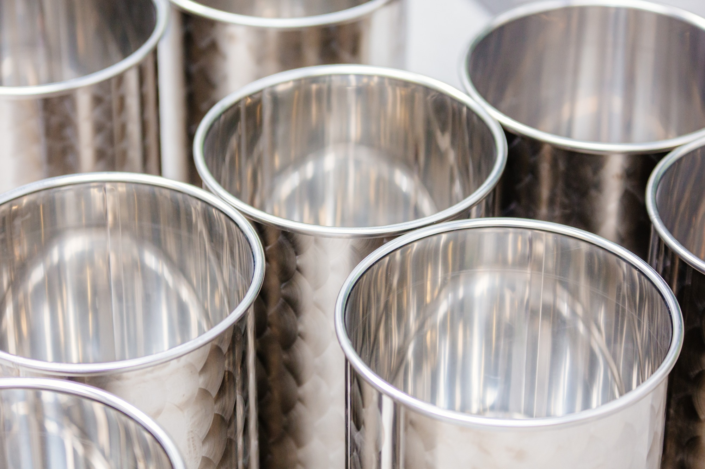
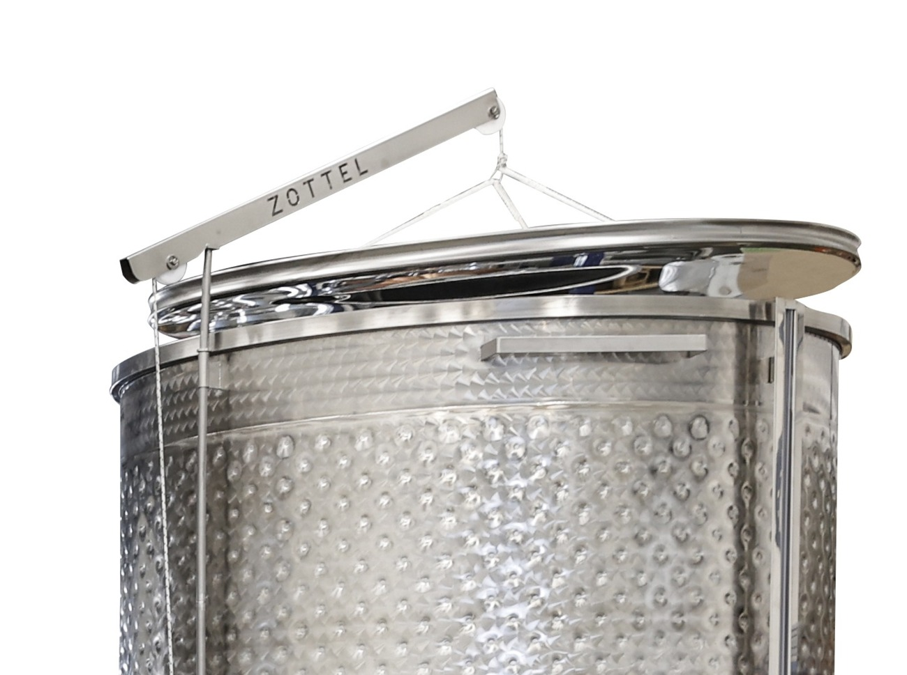
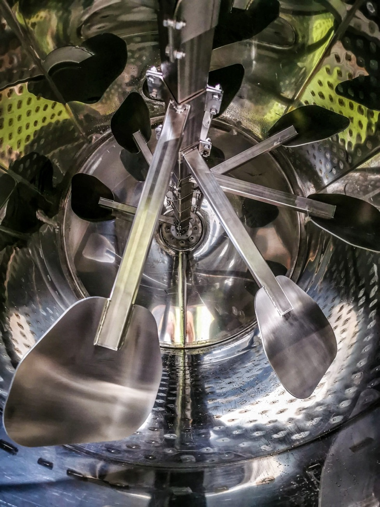
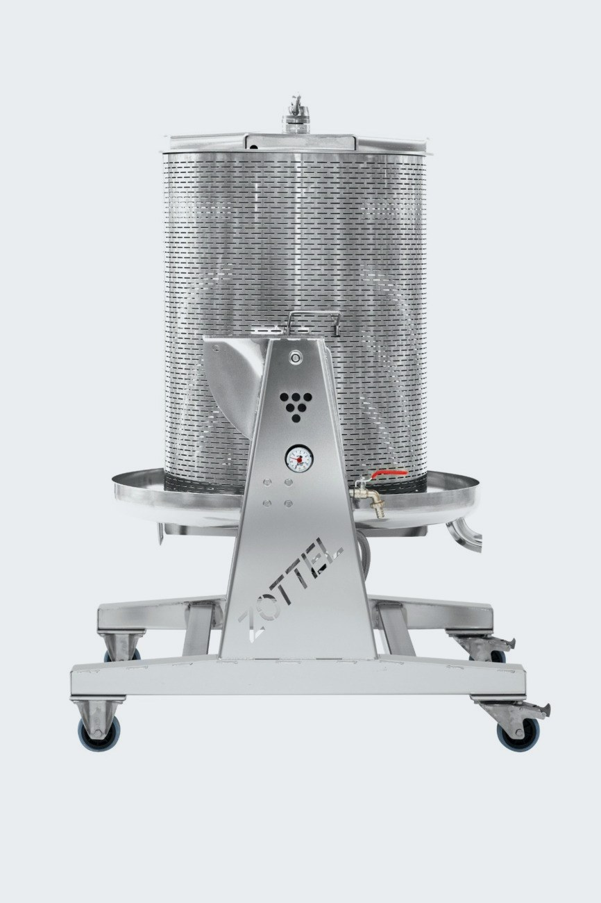
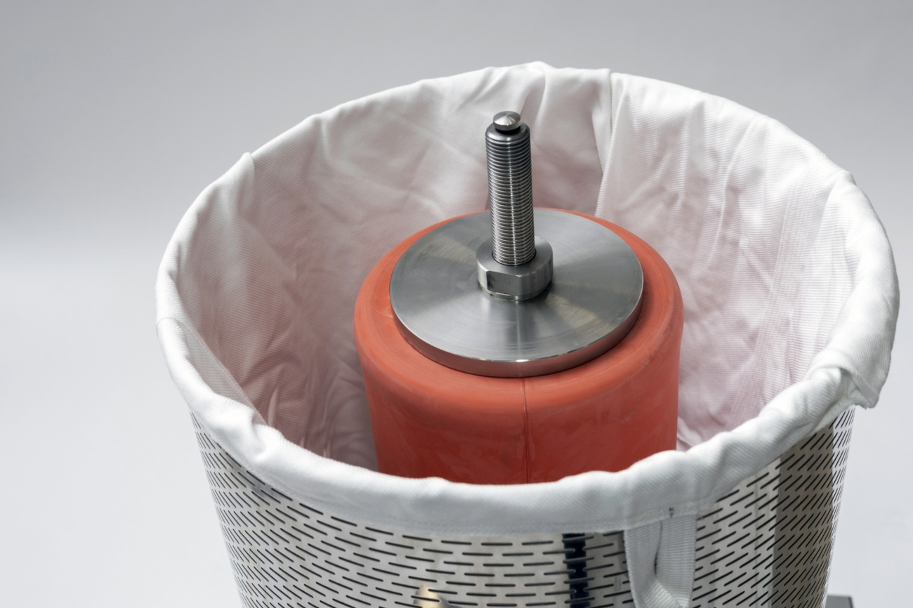

Zasidrani v tradiciji,
zremo v prihodnost.
Posode, stiskalnice in oprema iz nerjavnega jekla evropskega porekla. Razvito in izdelano v Žalcu, za vinarje, sadjarje in pivovarje po vsem svetu.
Že 30 let razvijamo in proizvajamo vrhunske rešitve za vinarje, sadjarje, oljarje, žganjekuho in pivovarne. Lasten razvoj, slovenska proizvodnja in nerjavno jeklo evropskega porekla, ki zdrži generacije.
Proizvodni program
Od posode za med do vinifikatorja za kletarje. Štirinajst programov izdelkov, vsi iz nerjavnega jekla evropskega porekla.
Za vsako panogo
Iz garaže v Petrovčah v svet.
Branko Zottel je leta 1995 v manjši garažni delavnici v Dobriši vasi skupaj z očetom začel izdelovati prve izdelke. Danes je Zottel družinsko podjetje z lastno blagovno znamko, ki jo poznajo kletarji od Gruzije do ZDA.


Certificirani vari. Sledljiva izdelava.
Izdelujemo posode, rezervoarje in drugo opremo iz nerjavnega jekla za prehrambno, kemično, farmacevtsko in procesno industrijo. Certificirani varilni postopki, usposobljeno osebje in nadzor procesov zagotavljajo kakovostno in sledljivo izdelavo.
SIST EN ISO 3834-3
Certifikat kakovosti na področju varjenja.
EN ISO 9606-1
Naši varilci so usposobljeni in certificirani skladno s standardom.
EN ISO 14732
Certificirani operaterji za avtomatsko varjenje.
PED 2014/68/EU
Tlačna oprema skladna z direktivo. Po potrebi izvedemo postopke za PED certifikat in CE označitev.
Izdelano po vaši meri.

Proizvodnja po naročilu
Glede na vaše potrebe in želje izdelamo inox izdelek, ki popolnoma ustreza vašim željam.
Natančnost pri varjenju, h kateri stremimo z vsakim novim izdelkom.
Kratki dobavni roki
Velike zaloge posod, stiskalnic in mlinov v lastnih skladiščih.
Sodoben design
Elektropolirana zunanjost in dovršena izdelava, ki ji zaupajo kletarji.

Menjava membrane
brezplačno
Za vodne stiskalnice vedno zagotavljamo dodatno opremo in nadomestne dele.

Dolga življenjska doba
Nerjavno jeklo evropskega porekla.
Z vizijo segamo čez vse meje.
Ime Zottel je v svetu prepoznavno kot simbol kakovosti in zanesljivosti. Kar 90 odstotkov izdelkov izvozimo, po Evropi, v Ameriko, Rusijo, Avstralijo in Gruzijo.

Celostna ponudba na enem mestu.
Oglejte si naš katalog posod in drugih izdelkov, kjer boste našli vse podrobne informacije o dimenzijah, volumnih in opremi.
Prelistaj katalogStopite v stik z nami.
Z veseljem se vam individualno posvetimo, odgovorimo na vsa vprašanja in pripravimo želeno ponudbo.